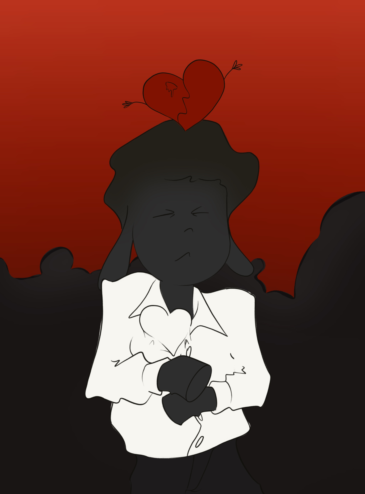
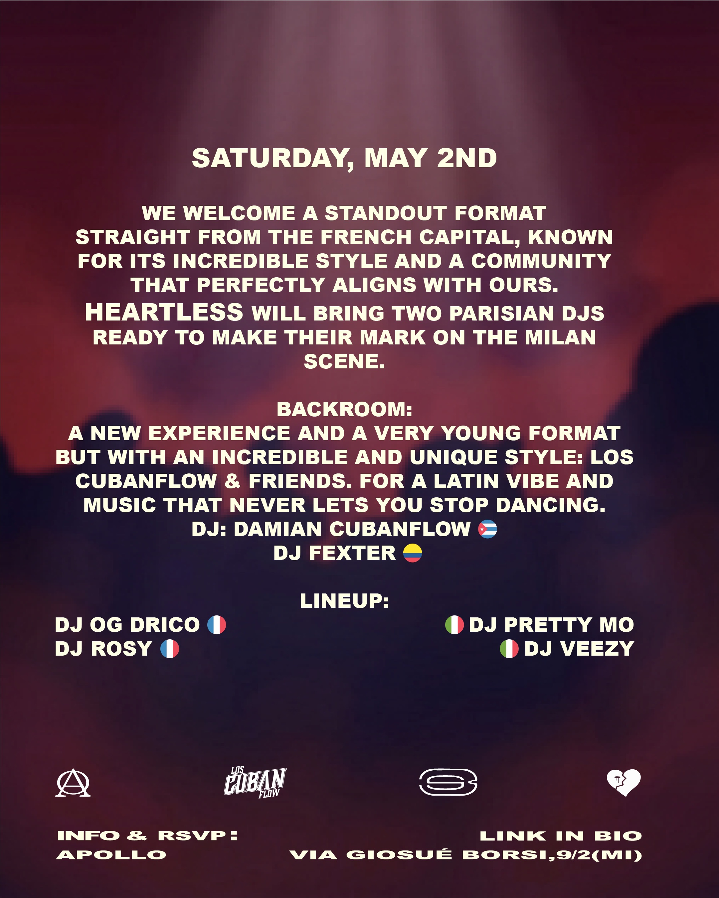
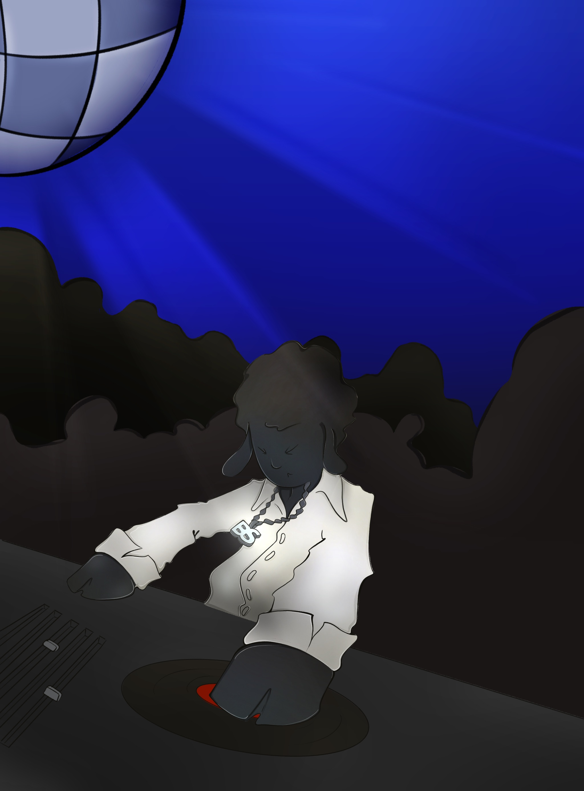
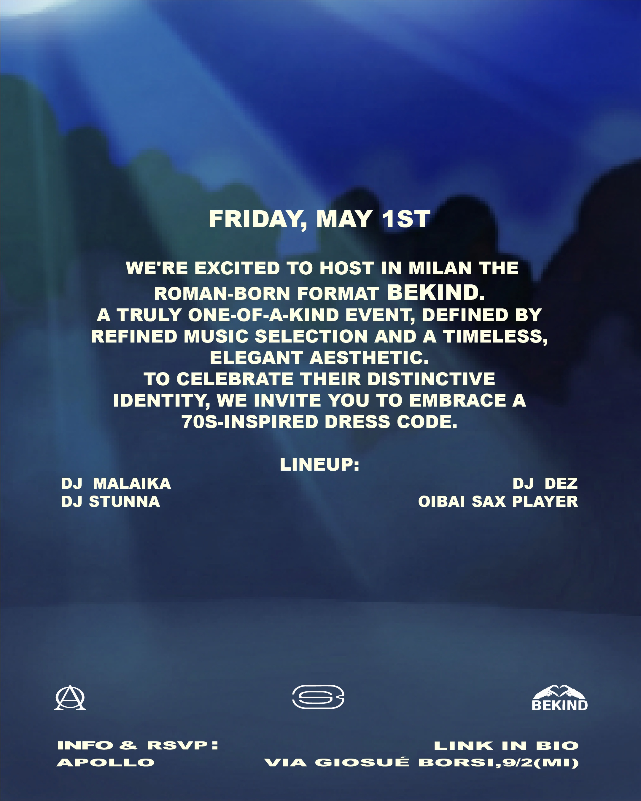

BLACK SHEEP X HEARTLESS X BEKIND X APOLLO
Black Sheep ha ospitato una struttura per eventi collaborativi di due giorni il 1° e il 2 maggio presso l'Apollo Milano, integrando format esterni: Bekind da Roma e Heartless da Parigi, affiancati da un intervento secondario in backroom di Los Cubanflow. L'obiettivo era produrre una serie coerente di asset promozionali digitali in grado di presentare l'evento multi-formato con elevata chiarezza visiva. Il progetto ha richiesto l'adattamento dell'identificatore principale del brand — la mascotte Black Sheep — in un sistema illustrativo flessibile, capace di incorporare l'identità distinta di ogni format ospite pur mantenendo il riconoscimento strutturale di base del brand ospitante.


La comunicazione visiva richiedeva un sistema in grado di supportare diversi toni narrativi: una presentazione raffinata, ispirata agli anni '70 per l'evento Bekind, e un'estetica più scura e carica di emozioni per l'evento Heartless. La sfida era creare volantini digitali coesi e asset animati che comunicassero chiaramente le lineup specifiche, i dress code e le atmosfere di ciascuna giornata, senza rompere il linguaggio visivo generale della community Black Sheep. Gli asset dovevano funzionare trasversalmente sulle piattaforme digitali per promuovere efficacemente le date consecutive.


Il processo di produzione è passato dalla pipeline standard di rendering 3D a un flusso di lavoro 2D specializzato. La mascotte 3D originale è stata riprogettata in un modello visivo cartoon illustrato a mano. Le illustrazioni statiche sono state poi elaborate e animate utilizzando Adobe After Effects per produrre asset dinamici. Questo flusso di lavoro ha permesso di esercitare un controllo preciso sullo stile del personaggio, sulla simulazione dell'illuminazione ambientale e sugli accessori contestuali, garantendo un'elevata coerenza visiva su tutti i deliverable digitali pur consentendo una personalizzazione specifica per il formato.



Il sistema visivo è stato biforcato per riflettere le due distinte identità dell'evento. Per la collaborazione Bekind, la mascotte è stata collocata in un ambiente dai toni freddi, vestita con uno stile ispirato agli anni '70 con gilet e camicia, e posizionata mentre interagisce con un giradischi per riflettere la selezione musicale classica e raffinata. Per la collaborazione Heartless, l'ambiente si è spostato su un rosso profondo e suggestivo. Il personaggio è stato renderizzato indossando una maglietta personalizzata con il motivo di un cuore infranto, stabilendo un legame visivo diretto con l'identità del brand parigino. Entrambi i sistemi condividono la stessa pipeline tecnica di animazione, assicurando coerenza visiva nonostante la differenza di tono.
I deliverable digitali finali includono: Volantini promozionali illustrati a mano che dettagliano complesse lineup giornaliere, asset animati progettati per la distribuzione sui social media e specifiche varianti visive backroom per l'intervento di Los Cubanflow. Questi materiali sono stati progettati per funzionare come una campagna di comunicazione unificata, fornendo una chiara gerarchia informativa riguardo a location, date e linee guida stilistiche, come il dress code anni '70. Il progetto ha trasformato un complesso programma di eventi su più giorni in una narrazione visiva strutturata e facilmente decodificabile. I risultanti asset animati in 2D hanno fornito al brand una campagna digitale scalabile e altamente personalizzata, rafforzando la natura collaborativa degli eventi e consolidando il ruolo centrale dell'identità visiva Black Sheep.
È possibile visualizzare l'archivio completo di tutti i lavori scorrendo verso il basso all'interno di questa pagina.
Per accedere ai servizi e richiedere una valutazione preventiva, premi il pulsante verde.